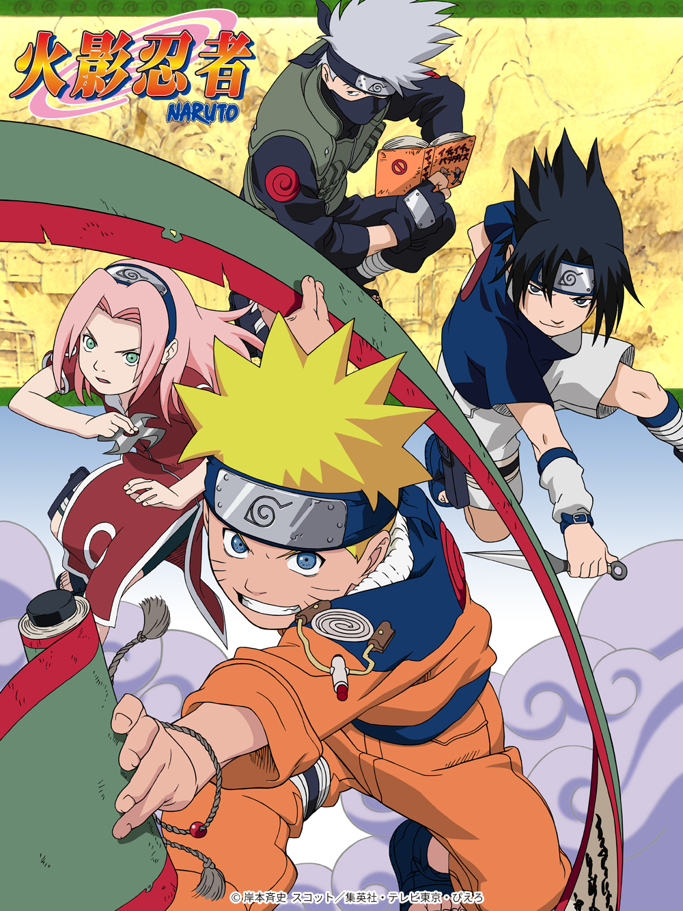
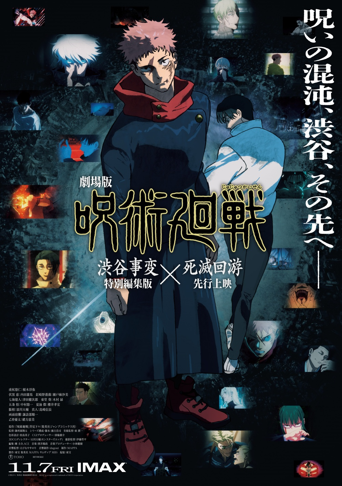

01
名偵探柯南
日本漫畫家青山剛昌筆下的推理漫畫作品。描述高中生偵探工藤新一被黑暗組織灌下神秘藥物導致自己縮小後，試圖調查該組織以及破獲其他各種案件找出讓自己能夠恢復原狀的解藥的故事。

01 / ABOUT ME
來台南讀大學的台中人
張靖婉
追星、看動漫、聽音樂，
收藏日常裡喜歡的事物。
02 / ANIME I LOVE
每一段故事，都有讓人著迷的理由。
日本漫畫家青山剛昌筆下的推理漫畫作品。描述高中生偵探工藤新一被黑暗組織灌下神秘藥物導致自己縮小後，試圖調查該組織以及破獲其他各種案件找出讓自己能夠恢復原狀的解藥的故事。

日本漫畫家岸本齊史創作的少年漫畫，講述忍者世界裡圍繞著身為對手的漩渦鳴人和宇智波佐助另兩人，與其他角色的故事經歷。

日本漫畫家芥見下下的作品，高中生虎杖悠仁在祖父臨終囑託下幫助他人，並因吞下詛咒手指而與特級詛咒「兩面宿儺」合而為一。為了對抗宿儺，他加入東京咒術高專，成為五條悟的學生，與伏黑惠、釘崎野薔薇成為同學的故事。
03 / MY FAVORITE IDOL

STAY WITH STRAY KIDS
JYP娛樂於2018年推出的男子團體，成員包括：BangChan、Lee Know、ChangBin、HyunJin、HAN、Felix、SeungMin及I.N
團名「Stray Kids」由成員構思，原為「迷路的孩子」之意，衍生出共同追求夢想、尋找曙光的理念
官方粉絲名為「STAY」，於2018年8月1日在官方社群平台上公布，含意為「Where Stray Kids STAY」
04 / ON REPEAT
最近播放清單裡的 Stray Kids。